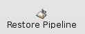
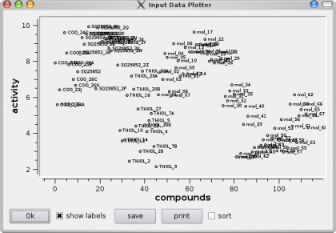
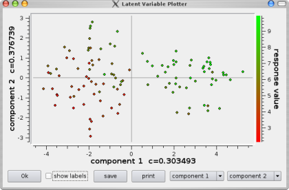
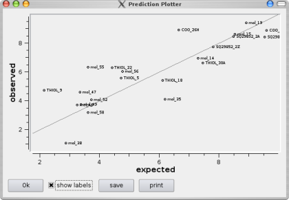
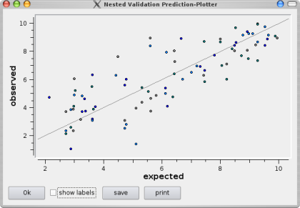

|  | In order to load a pipeline, just click onto the respective button. |
 | After executing (and opening) your pipeline you can examine the results. For a first quick overview, in the lower right of each model item the number of its features is displayed and in the lower right of all validation and prediction items the obtained quality is indicated. Moving the mouse over an item will furthermore give information about parameters that were either set by you during the creation of the pipeline or that were optimized by grid search. |
 | Moving the mouse over an input data item will display the number of compounds and features. Clicking onto the item (or selecting "plot data" from the context menu) opens a plotter that plots the response value of each compound within the data set (see example on the upper-left). By checking "sort", you can sort the compounds according to their response value. This way the distribution of the response variable is easier to evaluate (see example on the lower-left). Zooming in and out can be done using the left respectively right mouse button. |
 |
For each regression model that has been trained, you can plot the regression coefficients by choosing "plot coefficients" from the context menu.
If the coefficients' standard deviations have been calculated (see here), they will be automatically indicated by bars within the plot (see example on the left). Zooming in and out can be done using the left respectively right mouse button. |
 |
In case of a model that creates latent variables (like Partial Least Squares or Principal Component Regression) you can also plot the loadings, which assign an importance to each feature, and the latent variables, which constitute a mapping of the input data according to the loadings.
In order to plot the loadings, select "plot loadings" from the model item's context menu. You can choose the two loading vectors to be plotted against each other in the lower right of the plotter window. |
|  | If you want to plot the latent variables of your model, choose "plot latent variables" from its context menu.
Note, that you can select the two components to be plotted against each other in the lower right of the plotter window. |
|  | If you created a nested validation (see here) or requested the prediction of response values for new input data (see here), you can plot the prediction by choosing "plot predictions" from a prediction item's context menu. |
|  | If you created a nested validation (see here), you can display the predictions of all nested folds within one plot by choosing "plot all predicitions" from the nested-validation item's context menu.
The predictions of the different nested folds will appear in different colors. |